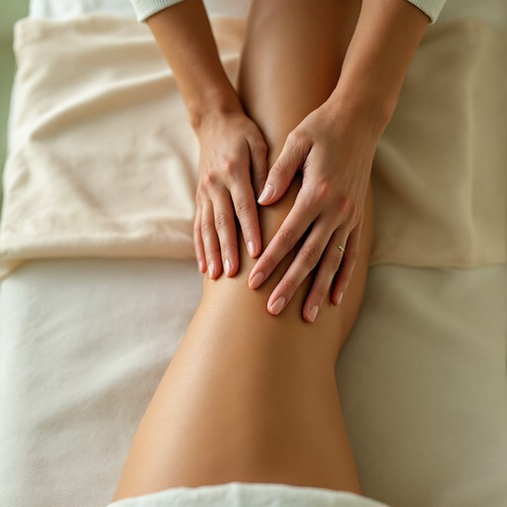

Zabiegi na ciało · Poznań
Mocna, modelująca praca na udach, pośladkach i brzuchu - tam, gdzie cellulit widać najczęściej. Zabieg pobudza krążenie w skórze i tkance podskórnej, a efekt buduje się serią, nie jedną wizytą.

Na czym polega
Masaż antycellulitowy to praca manualna: ugniatanie, rolowanie i rytmiczne chwyty na udach, pośladkach i brzuchu. W odróżnieniu od drenażu limfatycznego, który prowadzimy bardzo lekko, tutaj nacisk jest wyraźny - chodzi o pobudzenie krążenia w skórze i tkance podskórnej, a nie o samo przesunięcie płynu.
Zabieg wspiera ujędrnienie skóry i jej wygląd, ale nie usuwa tkanki tłuszczowej i nie zastępuje ruchu ani zmiany nawyków. Przy utrwalonym cellulicie realny efekt daje seria: zwykle 6–10 zabiegów, na początku dwa razy w tygodniu, potem rzadziej.

Korzyści
Najczęstszy powód wizyty. Pracujemy tam, gdzie skóra jest nierówna, a tkanka zbita.
Mocniejsza praca pobudza krążenie. Jeśli jednak dominują obrzęki, lepszym wyborem bywa delikatny drenaż limfatyczny.
Masaż jest dodatkiem do aktywności i nawyków, nie ich zamiennikiem - i działa najlepiej razem z nimi.
Pojedyncza wizyta daje lepsze ukrwienie i uczucie lekkości. Nad wyglądem skóry pracuje dopiero powtarzalność.
Jak przebiega zabieg
Pytamy o żylaki, zakrzepicę, choroby serca i nerek, ciążę oraz o to, czy obrzęk nie pojawił się nagle.
Ustalamy, na czym pracujemy: uda, pośladki, brzuch albo ramiona. Od tego zależy, czy wystarczy 60, czy lepiej 80 minut.
Ugniatanie, rolowanie i rytmiczne chwyty, z naciskiem dobranym do Twojej tolerancji. Skóra bywa potem zaczerwieniona przez kilkadziesiąt minut.
Prosimy o wypicie wody i krótki spacer - bezruch zaraz po zabiegu marnuje część efektu.
Czas trwania i cena
Dłuższa sesja daje zapas na większy obszar albo spokojniejsze tempo; zakres ustalamy na miejscu. Osiemdziesiąt minut kosztuje tyle samo, co wariant z presoterapią - jeśli masz też obrzęki, warto porównać oba.
Przeciwwskazania
Obrzęk, który pojawił się nagle, obejmuje tylko jedną nogę albo towarzyszy mu ból i zaczerwienienie, wymaga najpierw oceny lekarza, a nie masażu. Przy chorobach serca i nerek oraz po przebytej zakrzepicy decyzję podejmujemy po rozmowie - powiedz nam o nich przed wizytą.
FAQ
Jest wyraźnie mocniejszy od relaksacyjnego i bywa nieprzyjemny tam, gdzie tkanka jest zbita, ale nie powinien być bolesny. Nacisk dobieramy do Ciebie. Zaczerwienienie skóry przez kilkadziesiąt minut po zabiegu jest normalne.
Nie. To nie jest metoda odchudzania i nie zastąpi deficytu kalorycznego ani ruchu. Pracuje na skórze, tkance podskórnej i krążeniu, a nie na masie ciała.
Przy utrwalonym cellulicie realny efekt daje seria 6–10 zabiegów, na początku dwa razy w tygodniu, potem rzadziej. Pojedyncza wizyta daje przede wszystkim lepsze ukrwienie i uczucie lekkości.
Drenaż prowadzimy bardzo lekko, bo naczynia limfatyczne biegną tuż pod skórą, i celujemy w odpływ płynu. Masaż antycellulitowy jest mocniejszy i modelujący. Jeśli dominują obrzęki, zacznij od drenażu; jeśli nierówna skóra - od masażu antycellulitowego.
Tak, mamy osobny wariant: 80 minut masażu z presoterapią za 240 zł, czyli tyle samo, ile kosztuje sam 80-minutowy masaż.
Rezerwacja online
Wybierz dogodny termin online - potwierdzenie otrzymasz od razu.
Używamy niezbędnych plików cookies, żeby strona działała. Za Twoją zgodą chcemy też korzystać z Google Analytics, żeby wiedzieć, które podstrony są przydatne. Wybór możesz zmienić w każdej chwili. Szczegóły w polityce prywatności.
Potrzebne do działania strony i zapamiętania Twojego wyboru. Nie można ich wyłączyć.
Google Analytics - zagregowane statystyki odwiedzin. Domyślnie wyłączone.